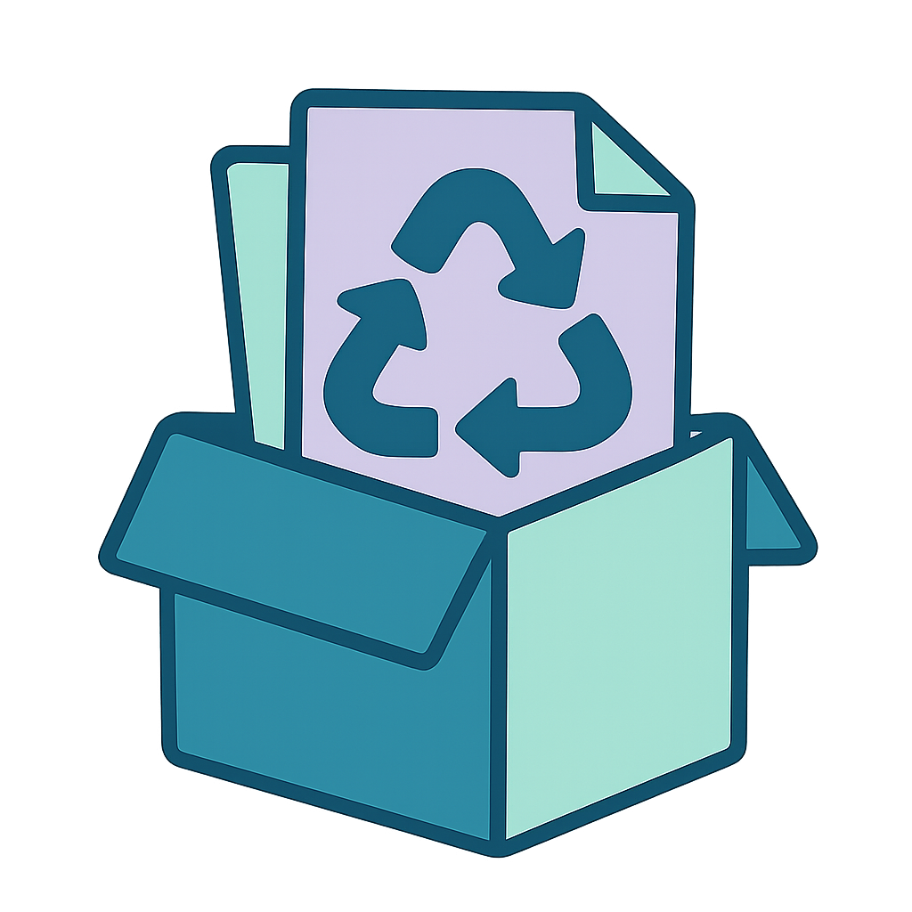

Guía de Reciclaje
El reciclaje es una acción fundamental para reducir la contaminación y conservar los recursos naturales. Aquí te ofrecemos una guía sencilla para reciclar de manera efectiva:
1. Clasificación de Residuos
Para facilitar el reciclaje, es importante separar los residuos correctamente en las siguientes categorías:

Papel y Cartón: Revistas, periódicos, cajas, folletos. Evita reciclar papel mojado o con grasa.
Vidrio: Botellas, frascos y envases. Lávalos antes de depositarlos en el contenedor.
Plástico: Botellas, bolsas y envases de productos. Separa según su tipo (PET, HDPE, etc.).
Metales: Latas de aluminio y acero. Aplástalas para optimizar el espacio.
Orgánicos: Restos de comida y jardinería, ideales para compostaje.
Videos Educativos
Aprende más sobre reciclaje con estos videos: